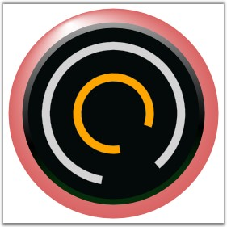

Circular gauge supports multiple scales. CircularGauge.Scales is a collection property that will accept any number of scales with type as 'CircularScale'. Circular scale position can be controlled by using the Radius property.
Following code example illustrates how to add multiple scales to the Circular Gauge.
|
[XAML]
<!--Circular gauge with frame type as FullCircle.--> <syncfusion:CircularGauge Radius="130" Name="circularGauge1" FrameType="FullCircle"> <syncfusion:CircularGauge.Scales>
<!--Circular Scale with radius as 116.--> <syncfusion:CircularScale Name="circularScale1" Minimum="0" Maximum="240" ScaleBarSize = "10" ShadowOffset="1" Radius = "116" BorderWidth = "0.2" BorderBrush="Gray" BackgroundBrush="LightGray" MinorIntervalValue="10" MajorIntervalValue="20" StartAngle="100" GapSweepAngle="310"> </syncfusion:CircularScale >
<!--Circular scale with radius as 50.--> <syncfusion:CircularScale Name="circularScale2" Minimum="0" Maximum="120" ScaleBarSize = "10" ShadowOffset="0" Radius = "50" BorderWidth = "0.2" BorderBrush="Gray" BackgroundBrush="Orange" MinorIntervalValue="10" MajorIntervalValue="20" StartAngle="80" GapSweepAngle="300"> </syncfusion:CircularScale > </syncfusion:CircularGauge.Scales> </syncfusion:CircularGauge > |

Figure 29: Multiple Scales
See Also
Circular Gauge, Circular Label Tick, Circular Mark Tick, Circular Pointer, State Indicator, Circular Range